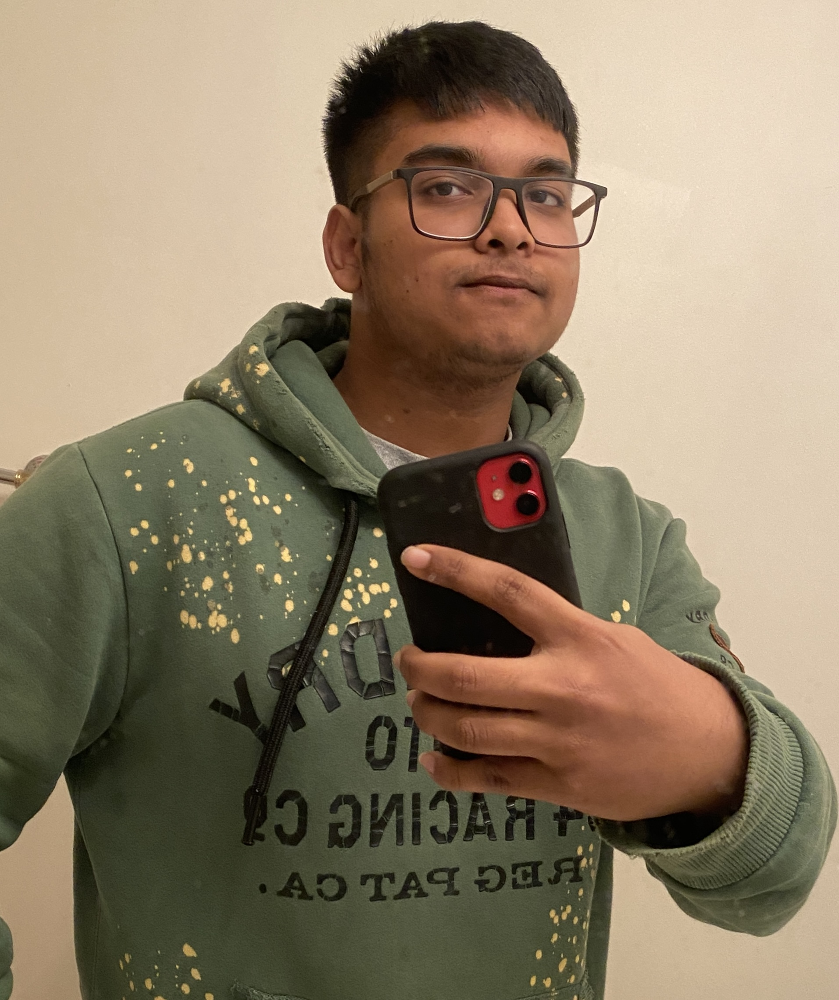

Hey there, I am Abu Hossain
SOFTWARE ENGINEER
Hire MeAbout Myself:
As a Computer Science major at Georgia State University, I am dedicated to becoming a specialized
software engineer with a commitment to excellence. My core strengths lie in effective communication
and a deep understanding of people's thoughts and ideas.
I am actively working on refining my time
management skills to ensure timely project delivery while maintaining high standards of quality.
Skills:
Proficient in Java, with a solid grasp of data structures and algorithms. Currently expanding
expertise in Python through coursework,
focusing on data structures and algorithm analysis.
Skilled in web development, proficient in HTML, CSS, and JavaScript, facilitating the creation
of dynamic web applications, including a Weather Application.
Excel in algorithmic design
and analysis, prioritizing efficiency through meticulous attention to space and time complexity.
Committed to ongoing self-improvement,
enthusiastic about exploring diverse programming
languages and technologies to achieve professional excellence as a software engineer.
My Works:
- Personal Portfolio Project:
- Personal Time table:
- Weather Application:
Connect With Me:
Skills:
Proficient in Java, with a solid grasp of data structures and algorithms. Currently expanding
expertise in Python through coursework,
focusing on data structures and algorithm analysis.
Skilled in web development, proficient in HTML, CSS, and JavaScript, facilitating the creation
of dynamic web applications, including a Weather Application.
Excel in algorithmic design
and analysis, prioritizing efficiency through meticulous attention to space and time complexity.
Committed to ongoing self-improvement,
enthusiastic about exploring diverse programming
languages and technologies to achieve professional excellence as a software engineer.
My Works:
- Personal Portfolio Project:
- Personal Time table:
- Weather Application:
Connect With Me:
